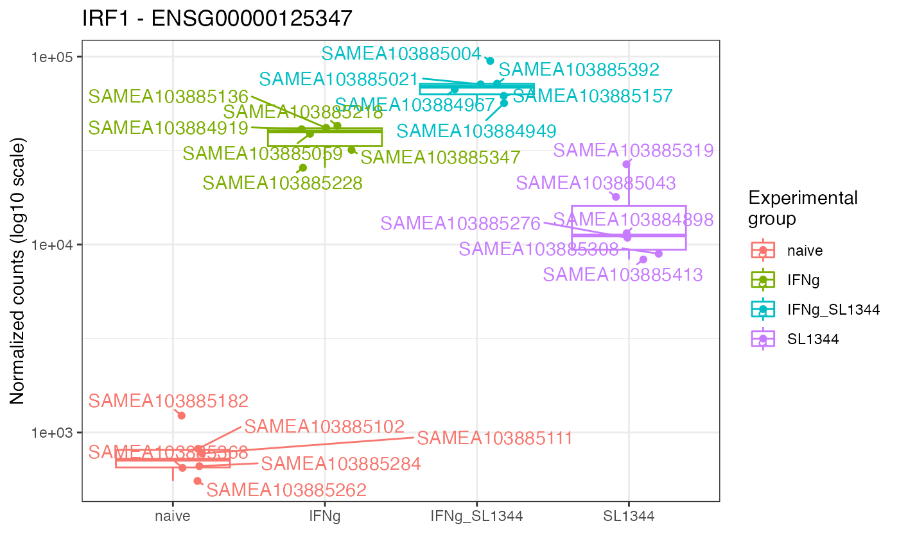

Plot expression values (e.g. normalized counts) for a gene of interest, grouped by experimental group(s) of interest
Usage
gene_plot(
dds,
gene,
intgroup = "condition",
assay = "counts",
annotation_obj = NULL,
normalized = TRUE,
transform = TRUE,
labels_display = TRUE,
labels_repel = TRUE,
plot_type = "auto",
return_data = FALSE,
gtl = NULL
)Arguments
- dds
A
DESeqDataSetobject, normally obtained after running your data through theDESeq2framework.- gene
Character, specifies the identifier of the feature (gene) to be plotted
- intgroup
A character vector of names in
colData(dds)to use for grouping. Note: the vector components should be categorical variables.- assay
Character, specifies with assay of the
ddsobject to use for reading out the expression values. Defaults to "counts".- annotation_obj
A
data.frameobject with the feature annotation information, with at least two columns,gene_idandgene_name.- normalized
Logical value, whether the expression values should be normalized by their size factor. Defaults to TRUE, applies when
assayis "counts"- transform
Logical value, corresponding whether to have log scale y-axis or not. Defaults to TRUE.
- labels_display
Logical value. Whether to display the labels of samples, defaults to TRUE.
- labels_repel
Logical value. Whether to use
ggrepel's functions to place labels; defaults to TRUE- plot_type
Character, one of "auto", "jitteronly", "boxplot", "violin", or "sina". Defines the type of
geom_to be used for plotting. Defaults toauto, which in turn chooses one of the layers according to the number of samples in the smallest group defined viaintgroup- return_data
Logical, whether the function should just return the data.frame of expression values and covariates for custom plotting. Defaults to FALSE.
- gtl
A
GeneTonic-list object, containing in its slots the arguments specified above:dds,res_de,res_enrich, andannotation_obj- the names of the list must be specified following the content they are expecting
Details
The result of this function can be fed directly to plotly::ggplotly()
for interactive visualization, instead of the static ggplot viz.
Examples
library("macrophage")
library("DESeq2")
library("org.Hs.eg.db")
# dds object
data(gse)
dds_macrophage <- DESeqDataSet(gse, design = ~ line + condition)
#> using counts and average transcript lengths from tximeta
rownames(dds_macrophage) <- substr(rownames(dds_macrophage), 1, 15)
keep <- rowSums(counts(dds_macrophage) >= 10) >= 6
dds_macrophage <- dds_macrophage[keep, ]
dds_macrophage <- DESeq(dds_macrophage)
#> estimating size factors
#> using 'avgTxLength' from assays(dds), correcting for library size
#> estimating dispersions
#> gene-wise dispersion estimates
#> mean-dispersion relationship
#> final dispersion estimates
#> fitting model and testing
# annotation object
anno_df <- data.frame(
gene_id = rownames(dds_macrophage),
gene_name = mapIds(org.Hs.eg.db,
keys = rownames(dds_macrophage),
column = "SYMBOL",
keytype = "ENSEMBL"
),
stringsAsFactors = FALSE,
row.names = rownames(dds_macrophage)
)
#> 'select()' returned 1:many mapping between keys and columns
gene_plot(dds_macrophage,
gene = "ENSG00000125347",
intgroup = "condition",
annotation_obj = anno_df
)
